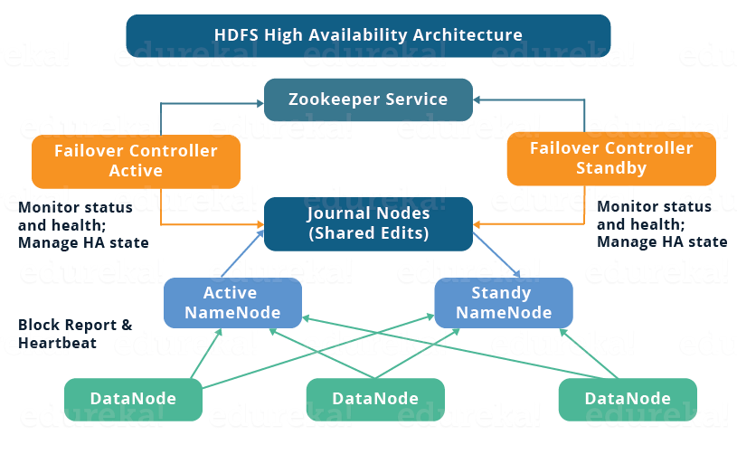

在这篇文章中，我将讲述HDFS 2.x高可用集群架构和如何搭建一个高可用的HDFS集群。其内容如下：
HDFS HA架构
- 介绍
- NameNode高可用
- HA架构
- HA的实现（JournalNode和共享存储）
如何设置Hadoop集群的HA(Quorum Journal Nodes)？
介绍
为了解决Hadoop1.x的单点故障问题，Hadoop2.x引入了高可用集群的概念。HDFS架构遵从Master/Slave拓扑，NameNode作为Master负责管理Slave节点(DataNode)。由于Master只有一个节点，因此它将成为整个系统的瓶颈。尽管引入的Secondary NameNode降低了NameNode中数据丢失的风险，但是它并没有解决NameNode高可用的问题。
NameNode可用性
如果使用HDFS的默认配置，NameNode会有单点故障的风险。当NameNode不可用的时候，整个系统将会是不可用的，直到NameNode重启或者引入新的NameNode。
NameNode的不可用的原因可能是以下几个方面：
- 软件或者硬件的升级
- NameNode的崩溃
HDFS高可用架构
HA架构通过设置两个NameNode(一主一备)来解决NameNode的可用性问题。因此，在一个高可用的集群中，将同时会有两个NameNode在运行。
- Active NameNode
- Standby/Passive NameNode

如果一个NameNode挂了，另一个NameNode将会接管整个集群，从而减少集群的下线时间。备用的NameNode拥有集群的失败保护能力。因此当主节点挂了之后，通过被节点我们能够自动失败恢复。
但是，在保持HDFS高可用集群的一致性上，将会有以下两个问题：
- 主备节点相互同步。拥有相同的元数据，可以使得主节点挂了之后，备节点可以快速的失败恢复。
- 同时只能有一个主节点。当有两个主节点时，将会导致数据竞争。一个集群被分裂成两个小集群，这种场景被称为脑裂。为了避免这种场景的发生，必须建立一个栅栏来确保同时只有一个主节点。
HA架构的实现
在HDFS高可用架构中，同时运行有两个NameNode，一个主，一个备。它通过下面两种方式来实现主备节点配置。
- 使用Quorum Journal Nodes
- 使用NFS共享存储
Quorum Journal Nodes

- 主备节点通过一组独立的叫做JournalNodes的节点来保持数据同步。JournalNodes之间相互连接，然后把收到的请求信息复制到其他节点。
- 主NameNode负责更新JournalNodes中的EditLogs（元信息）。
- 备NameNode读取JournalNode中EditLogs中的变化，并且应用到它自己的命名空间。
- 在失败恢复期间，备NameNode需要确保在称为主节点之间更新JournalNodes中的元信息。这使得当前的命名空间与失败之前的命名空间状态同步。
- 两个NameNode的IP地址对于所有的DataNodes都是可见的。同时DataNodes发送心跳包和阻塞位置信息给两个NameNode。这样，由于备节点及时更新了集群的额阻塞信息，从而可以更快的恢复。
NameNode隔离
之前讨论过，同时只有一个主NameNode对整个集群来说是非常重要的。因此，NameNode之间的隔离就显得尤为重要。
- JournalNodes只允许同时只有一个NameNode可以写日志。
- 主节点挂之后，备节点负责写日志到JournalNodes，并且禁止其他NameNode再成为主节点。
- 最后，备节点就转换为主节点。
使用共享存储
- 主备NameNode节点通过共享存储来保持同步。主NameNode把它在自己的命名空间中修改的日志打到共享存储的EditLog中。备节点读取共享存储中的EditLog，并更新到自己的命名空间中。
- 在失败恢复的时候，备节点首先使用共享存储中的EditLog来更新元信息。然后，它就成为了主节点。这样，就使得当前的命名空间的状态跟失败恢复之前的状态同步。
- 管理员必须配置至少一个栅栏方法来防止脑裂场景。
- 系统可以使用很多栅栏隔离机制。比如杀死NameNode的进程和废除进入共享存储目录的权限。
- 另外，我们可以使用STONITH技术来隔离先前的主节点。STONOTH使用专门的分布式单元来强制下线主NameNode机器。
自动失败恢复
失败恢复是指一种当检测到失败时，自动转换到次要系统。总共有两种失败恢复：
- 优雅的失败恢复：手动初始化失败恢复。
- 自动失败恢复：当NameNode挂了之后，自动初始化失败恢复程序。
Apache Zookeeper为HDFS高可用集群提供自动失败恢复的能力。它保持非常小的协调数据，通知客户端数据改变和监测客户端的失败。Zookeeper保持与NameNode的会话。在失败的情况下，会话将会过期，Zookeeper将通知其他NameNode初始化失败恢复程序。同时，其他备NameNode将会锁住Zookeeper，来使得自己成为主NameNode。
ZookeerFailoverController (ZKFC) 是一个Zookeeper客户端，能够监测和管理NameNode的状态。每个NameNode运行一个ZKFC。ZKFC负责周期性的监测NameNodes的健康状态。
现在我们了解了高可用的Hadoop集群，接下来就开始部署集群。
在主NameNode运行的后台程序有：
- Zookeeper Fail Over controller
- JournalNode
- NameNode
备NamdeNode运行的后台程序有：
- Zookeeper Fail Over controller
- JournalNode
- NameNode
DataNode上运行的后台程序有：
- JournalNode
- DataNode
搭建和配置Hadoop的高可用集群
1.每个节点设置JAVA环境和host。
| 虚拟机 | IP地址 | 主机名 |
|---|---|---|
| 主NameNode | 192.168.60.1 | hadoop01 |
| 备NameNode | 192.168.60.2 | hadoop02 |
| DataNode | 192.168.60.3 | hadoop03 |
2.每个节点设置ssh免密登录。
1 | ssh-keygen -t rsa |
一直按enter直到结束。当都生成ssh密钥后，你会得到一个公钥和私钥。
注意：.ssh目录的权限需要设置为700，.ssh目录里面文件的权设置为600。
然后把每台机器上的id_rsa.pub内容复制到authrozied_keys文件中。
1 | cat ~/.ssh/id_rsa.pub >> ~/.ssh/authorized_keys |
接着重启所有节点的ssh服务。
1 | service sshd restart |
接着你可以通过ssh命令免密登录到其他机器上。如果还是需要密码，请检查以上设置是否正确。
3.下载和解压Hadoop和Zookeeper的二进制文件。
1 | wget https://archive.apache.org/dist/zookeeper/zookeeper-3.4.6/zookeeper-3.4.6.tar.gz |
4设置hadoop环境。打开.bashrc文件。
1 | vi ~/.bashrc |
添加以下内容：
1 | export HADOOP_HOME=< Path to your Hadoop-2.6.0 directory> |
5.设置hadoop配置文件
编辑core-site.xml文件，增加以下内容。
1 | <configuration> |
编辑hdfs-site.xml文件，增加以下内容
1 | <property> |
6.设置zookeeper配置文件
编辑zoo.cfg，增加以下内容
1 | Server.1=hadoop01:2888:3888 |
7.拷贝文件到各个节点
完成上述步骤后，把上面设置过的.bashrc文件，hadoop目录，zookeeper目录通过scp命令复制到其他节点。
1 | scp –r <path of directory> edureka@<ip address>:<path where you need to copy> |
8.为zookeeper节点设置id。
在zookeeper的配置文件目录中，增加一个myid的文件。然后每个节点分别设置为1，2，3。
9.启动hadoop集群
在配置了journalnode的节点上启动journalnode。
1 | $ hadoop-daemon.sh start journalnode |
在主NameNode节点上格式化HDFS，并启动NameNode。
1 | $ HDFS namenode -format |
复制HDFS元信息到备NameNode，并启动备NameNode。
1 | $ HDFS namenode -bootstrapStandby |
在每个节点上启动zookeeper。
1 | $ zkServer.sh start |
在启动zookeeper服务后，你在每个节点上通过JPS命令可以看到QuorumPeerMain进程。
启动DataNode。
1 | $ hadoop-daemon.sh start datanode |
格式化zookeeper数据。
1 | $ HDFS zkfc –formatZK |
在主备NameNode启动启动ZKFC服务。
1 | $ hadoop-daemon.sh start zkfc |